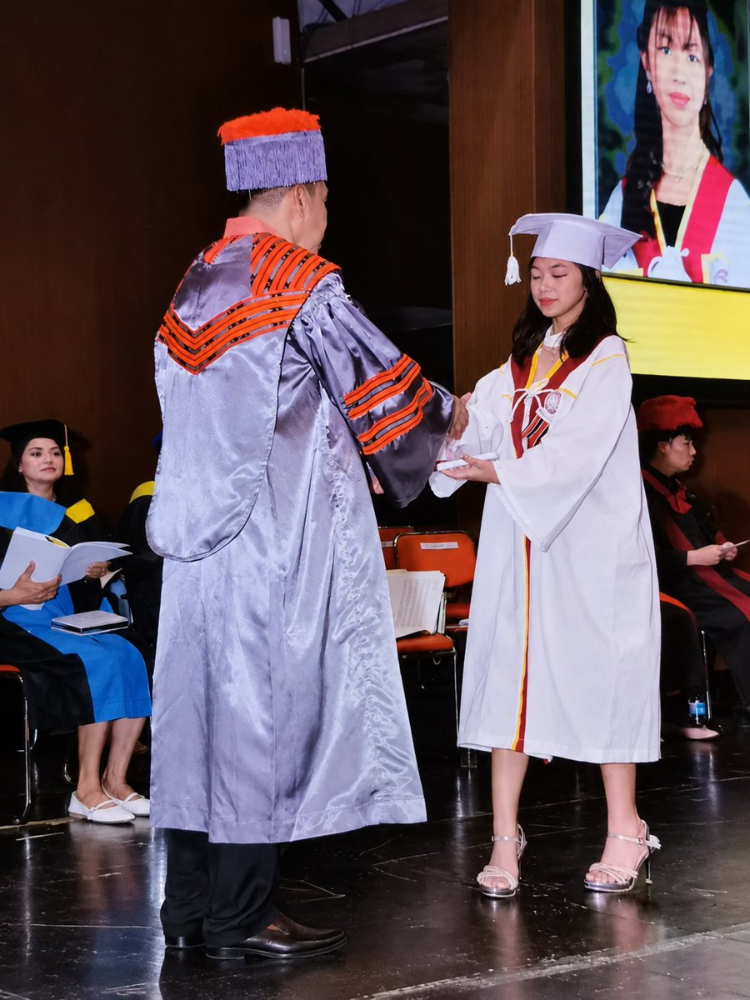
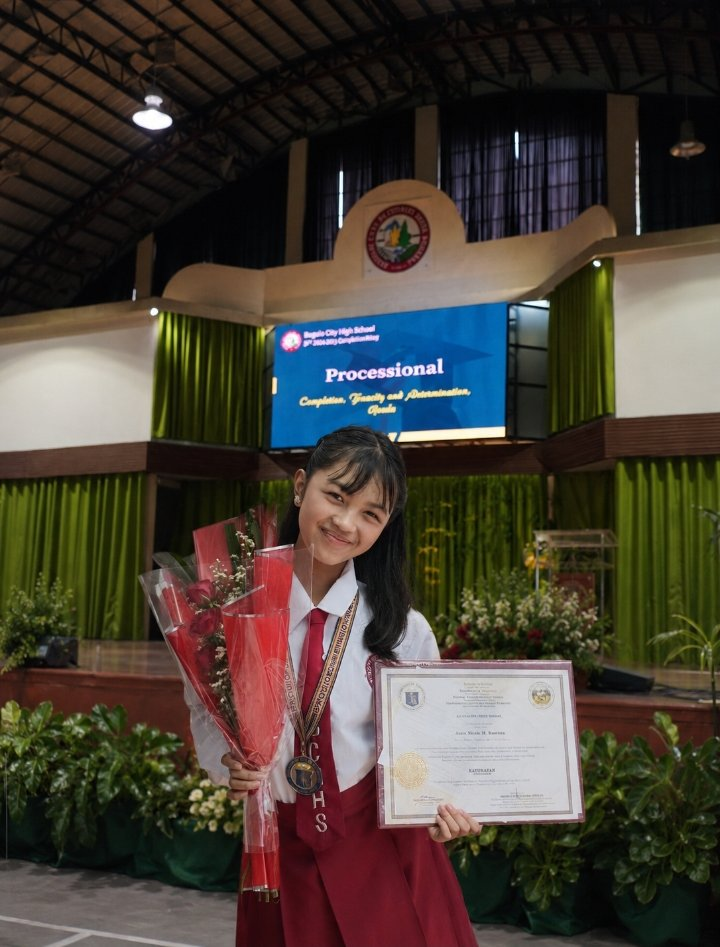
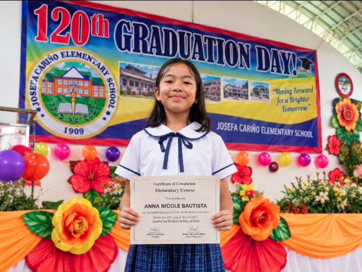
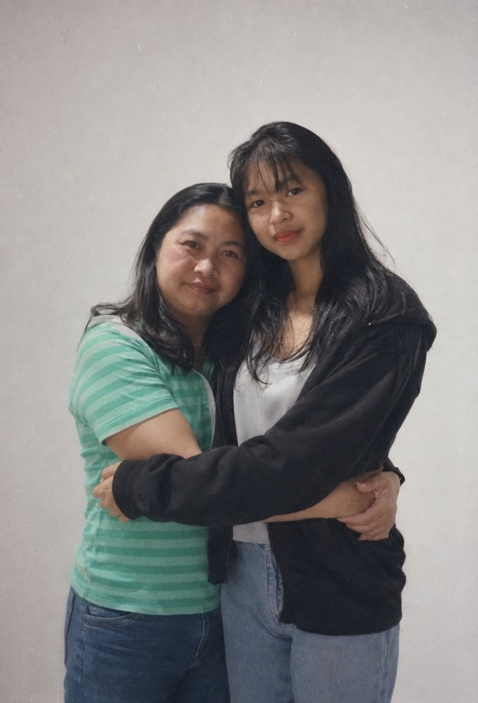
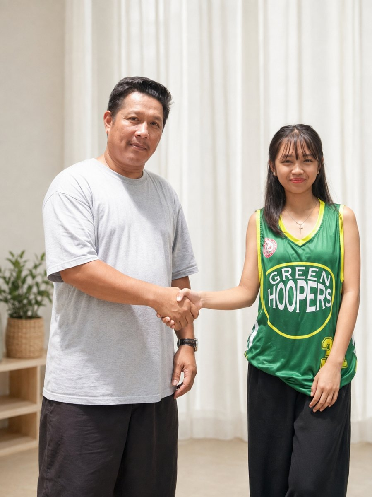

Personal information
- Name
- BAUTISTA, ANNA NICOLE
- Address
- 88-A Balacbac Interior A, Sto Tomas Proper, Baguio City 2600
- nics.bna@gmail.com
- Phone
- 09500422127
- facebook.com/share/1cqJqyzv7T
I am an industrious student who always desires to learn and grow. I also like acquiring practical skills which are applicable in the real world and am proud of good communication skills and a high typing speed. What I really want to experience is acquiring hands-on skills, broadening my knowledge, and taking part in projects that bring about positive results.
Educational attainment
Currently studying
College · 1st Year
University of the Cordilleras
Bachelor of Science in Computer Science
SY. 2024–2026
Senior High School
Baguio College of Technology
Harrison Road, Baguio City

SY. 2020–2024
Junior High School
Baguio City National High School
225 P. Gomez St, Baguio City

SY. 2014–2020
Elementary
Josefa Cariño Elementary School
Barangay F. Yandoc St., Baguio City

Family


Friends
Photos of friends will go here soon.